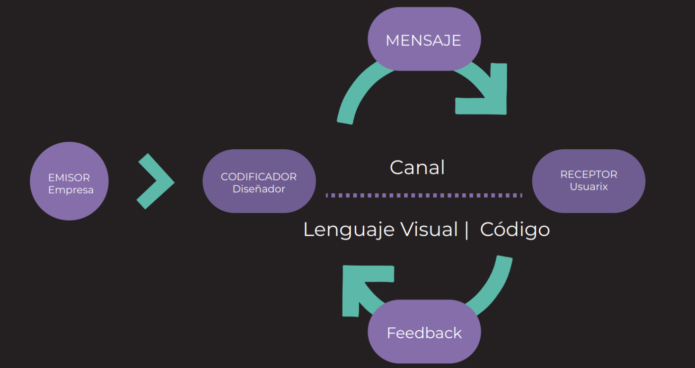

Clase 1: La doble vida del hipersujeto
"La doble vida del hipersujeto"
Leonardo Solaas
Establezcamos, para empezar, una premisa, que en nuestros tiempos es casi de sentido común: a
saber, que esa cosa que llamamos “yo” es, en gran medida, un relato. O bien, un conjunto más o
menos coherente de afirmaciones e historias que repetimos día a día a otras personas y a nosotros
mismos. Es la suma de las ideas que tenemos acerca de lo que somos. Es un entramado variable
hecho de lenguaje.
Agreguemos a esto la siguiente hipótesis: que las formas literarias dominantes en una cierta época
tienen una gran influencia sobre la forma en que se constituye esa subjetividad. Son el modelo y la
caja de herramientas disponible para armar nuestra propia historia.
Hasta hace poco el género literario dominante era la novela. Con “dominante” quiero decir: el más
popular, el que los lectores pasaban más tiempo leyendo, e incluso los no lectores recibían en la
atmósfera cultural de la época.
La novela nace con la modernidad, y trae consigo la innovación técnica del acceso directo al
mundo interior de los personajes. A diferencia, por ejemplo, del teatro, donde sólo veíamos lo que
los actores se decían unos a otros, en la novela podemos ver lo que un personaje se dice a sí
mismo. Somos espías o infiltrados en el espacio íntimo del pensamiento, completamente
inaccesible en la vida real salvo por la excepción privilegiada de nuestra propia mente. La magia
del artificio novelesco es permitirnos estar en otro como en nosotros mismos. Nos convierte en
invasores que escuchan pensamientos ajenos.
También es íntima la situación de consumo de la novela: estamos solos con el libro. Tanto el teatro
como otros géneros orales (cuentos tradicionales, poemas épicos) estaban asociados a un
encuentro social. Las historias eran una forma de estar con otros, un ritual de intercambio y
creación de lazos entre dos o más personas. La novela, en tanto efecto del crecimiento de la
alfabetización y la invención de la imprenta de tipos móviles, es una forma de encuentro diferido,
que se disfruta en soledad.
Pero, ¿qué tipo de vida cuenta la novela? Cuenta la vida de un sujeto que se ve enfrentado a su
propia libertad, y que debe conquistarla por medio de la toma de decisiones vitales.
En las sociedades tradicionales, pre-modernas, la libertad no era un problema muy serio: las
identidades estaban determinadas mayormente desde el nacimiento, incluyendo rango social,
ocupación u oficio, perspectivas de matrimonio y aspiraciones posibles. Rebelarse contra el
ordenamiento social establecido era riesgoso y mal visto. Cada persona tenía su lugar en el plan
divino y su misión era ocuparlo adecuadamente.
La modernidad introduce el problema de la elección. El espíritu libre, o la sustancia pensante, ya
no tiene un lugar preestablecido en el cosmos. Tiene que decidir qué hacer con su vida.
El héroe de la novela es el sujeto humano que goza o sufre de esa libertad, que se enfrenta al
mundo armado de su fuerza, voluntad e inteligencia, pero sin guía alguna ni destino fijado de
antemano. Las escrituras ya no sirven como manual de instrucciones ni modelo de la vida que
debemos vivir. Estamos solos ante el cosmos.
Entonces, en la modernidad la vida es una novela. Cada uno es el héroe de su propia historia, y
una actividad principal del sujeto moderno es relatar esa historia, tanto a los otros como a sí
mismo. La novela se organiza en instancias dramáticas: los momentos donde mejor se manifiesta
el sujeto son los dilemas existenciales, los grandes momentos de decisión. Una vida es, en síntesis,
un encadenamiento de escenas clave que explican y demuestran quién es ese sujeto.
¿Cómo estamos ahora en relación a ese modelo? Durante el siglo XX los medios audiovisuales
empiezan sin duda a introducir novedades. Las historias se consumen más rápido, en mayor
cantidad y menor detalle, y emergen industrias que las convierten en un bien abundante, una
commodity. Empezamos a vivir en un mundo saturado de historias.
Pero yo diría que el modelo de la novela no entra en una crisis seria sino hasta nuestros días. ¿Cuál
diríamos hoy que es el género literario dominante? Si lo juzgamos por el tiempo que dedicamos
cada día, sería sin duda el hipertexto en Internet, y en particular las series infinitas de posts en
redes sociales como Facebook, Twitter, Instagram y otras.
Adoptando la terminología de Facebook, podemos llamar “stream” a esa cadena interminable de
informaciones que recorremos haciendo scroll. El stream tiene una forma fragmentaria,
discontinua, que no se parece a ninguno de los géneros tradicionales. Es más bien como el diálogo
interno, que salta de una cosa a otra sin mucha coherencia. O peor aún, porque mientras una
mente humana mantiene al menos el tenue hilo de la asociación libre, en el stream cada
fragmento no tiene más relación con el anterior y con el siguiente de la que emerge azarosamente
y a posteriori.
Como no hay continuidad, la experiencia del stream es una especie de eterno presente: cada post
vive en su tiempo separado, como una instancia, a veces, de una línea narrativa separada y virtual,
que el lector tiene que reconstruir a partir del recuerdo de otros posts sobre el mismo tema. No
existen el suspenso o la tensión narrativa que movían la acción en la novela, sino una especie de
estado de flujo sin dirección determinada, de curiosidad abierta y vaga expectativa de que la
próxima información que aparezca en pantalla sea más sorprendente o interesante que las
anteriores.
Podríamos decir que el presente continuo del stream nos da acceso al acontecimiento, en el
sentido de lo que sucede en el mundo en este preciso instante. Es la historia del presente. Eso
supone que el mundo es algo en estado de flujo y cambio perpetuo. Al contrario de la novela, en la
que el mundo solía ser un fondo relativamente estable sobre el que el héroe se movía, en el
stream nos encontramos inmóviles frente a la pantalla, contemplando como en un aleph a un
mundo que se mueve y se transforma ante nuestros ojos.
Pero claro, otra condición fundamental del stream es que no somos meramente lectores: todos
podemos también insertar nuestras propias informaciones en el flujo, y volvernos co-autores de
ese texto colectivo. En el mundo de la novela, unos pocos escritores escribían para muchísimos
lectores. Pero ahora la escritura se ha democratizado: todos leemos y todos escribimos, en un
ciclo continuo y retroalimentado de producción y consumo. A esta nueva literatura debe
corresponder, según nuestra hipótesis, un nuevo tipo de sujeto “escrito” bajo este paradigma. Se
trataría de un sujeto del hipertexto o, brevemente, un hiper-sujeto.
Roland Barthes imaginaba, en una entrevista de 1974, una práctica que ignorara las figuras
mayores de la modernidad literaria: que no resultara en novelas, ni en poesías, ni en ensayos. Era
“una cierta idea utópica de la literatura, o de la escritura, una escritura feliz”[1]. Los textos
circularían en pequeños grupos de amistades, por fuera de toda instancia mercantil, y se trataría
entonces “del deseo de escribir, del goce de escribir y del goce de leer”, derribando el divorcio
entre la lectura y la escritura.
El cine y la televisión eran todavía esencialmente modernos, porque no rompían con el modelo
asimétrico de la novela (y de la pintura, la música, etc.), en el que unos pocos productores
producen informaciones para muchísimos consumidores, que los reciben de forma mayormente
pasiva. Es la cultura de masas, el modelo del broadcasting. La visión utópica de Barthes era la de
un modo de producción distinto, más allá de las jerarquías y asimetrías fundamentales del
capitalismo moderno. Un modo horizontal, simétrico, sin centros, más cercano al diálogo que al
discurso.
En 1984 Vilém Flusser tuvo una visión semejante. Propuso distinguir, por un lado, los “hilos
fascistas”, que son los que bajan en haces (fasces) desde los centros de poder hacia los nodos
periféricos, y por otro los “hilos antifascistas”, que son aquellos que corren en sentido transversal,
conectando a los nodos entre sí directamente, sin pasar por los centros de poder[2]. Flusser
escribía antes de que la Internet fuera una realidad cotidiana, pero veía ya en las potencialidades
de la técnica la apertura futura de estos canales orientados al diálogo, que se perfilaban como una
señal de esperanza en un mundo culturalmente homogéneo y hegemónico.
Hoy vivimos cada día, con una intensidad impensada, en alguna versión de la utopía de Barthes y
de Flusser: intercambiamos libremente informaciones en grupos de amistad e interés, en un
continuo de lectura y escritura sin barreras de entrada ni mediaciones comerciales. Sin embargo,
empujados por la técnica a esta tierra prometida del diálogo universal, no está para nada claro que
se trate efectivamente de una utopía.
En primer lugar, el efecto de la “escritura feliz” es muchas veces el hastío o el agotamiento. El
stream se vuelve homogéneo, repetitivo, falto de sentido. La hiper-comunicación nos deja más
aislados. La sobrecarga de información nos impide distinguir qué es importante. Como dice Boris
Groys, la imagen marxista de una sociedad donde todos somos artistas, es decir, creadores de
informaciones, no es una utopía, sino una pesadilla [3].
En segundo lugar, los centros de poder aún están ahí. Ya no producen contenidos, sino que se
limitan a administrar y distribuir las informaciones producidas por nosotros, los usuarios,
registrando al mismo tiempo cada una de nuestras acciones en sus plataformas con finalidades
comerciales. Así, Google y Facebook se cuentan entre las compañías más cotizadas del mundo,
mientras observamos con alarma y nostalgia la decadencia de las empresas periodísticas
tradicionales, criaturas en vías de extinción sobrevivientes de la era del broadcasting.
Por último, hoy podemos presenciar el espectáculo alarmante de que los “hilos antifascistas”
transmiten en los hechos informaciones fascistas, que tienen efectos tan poco utópicos como el
actual resurgimiento de las derechas y los discursos discriminatorios y reaccionarios en todo el
mundo. Los grupos de afinidad se transforman en burbujas de contenido que crean un caldo de
cultivo favorable a las opiniones más extremas y los discursos delirantes, más allá de todo
contraste con la realidad o con puntos de vista diferentes.
La Internet es literalmente una u-topía, es decir, un no-lugar, que está en cambio entre todos los
lugares, colapsando las distancias geográficas, sociales y culturales. Es el no-sitio donde todos los
humanos podríamos encontrarnos en tanto, simplemente, humanos, en una conversación no
regulada por el peso de las identidades colectivas que habitualmente median nuestros
intercambios: sexo, edad, clase, cultura, nacionalidad.
Esa utopía, sin embargo, se revela como una entidad profundamente paradójica. Se las arregla
para ser al menos tres cosas a la vez: un aleph que nos permite presenciar el flujo del mundo
entero en el marco luminoso de una pantalla; un panóptico donde todo lo que vemos, cliqueamos
y escribimos queda registrado en los inmensos servidores de diversas corporaciones globales y
agencias de seguridad; y una aldea global en la que podemos, al menos en potencia, entrar en
conversación con cualquiera y formar asociaciones de interés sin límites de ningún tipo.
Decidir que la Internet es “buena” o “mala” y dar por cerrado el caso es evidentemente un acto de
ingenuidad o pereza intelectual que elude enfrentarse a esa naturaleza contradictoria, y al hecho
de que todos esos aspectos de la red le son de algún modo esenciales y están ligados de manera
indisoluble.
El caso es que la Internet, como infraestructura técnica, ha instalado por su propia naturaleza una
suerte de socialismo literario, donde todos somos a la vez lectores y escritores. Por ahora, la forma
principal que ha tomado esta nueva literatura es el stream. No podemos decir que sea una forma
corta ni larga: si bien los posts tienden a ser cortos, como en el caso extremo de los 140 caracteres
de Twitter, el stream en sí es virtualmente infinito. Nuestra atención se fragmenta en muchas
informaciones breves, y al mismo tiempo se concentra en una sucesión sin fin de la que muchas
veces emergemos con la clara sensación de que nos atrapó durante demasiado tiempo.
De manera parecida, las grandes decisiones vitales del héroe novelesco han sufrido un proceso de
atomización. En las redes sociales quedamos definidos por la sumatoria de nuestros posts,
reposteos, comentarios y likes. En un mundo sin continuidad narrativa, ya no hay nudos
dramáticos, sino una acumulación continua de micro-decisiones. El dilema existencial de antaño se
convierte en una serie de clics.
Esta nueva especie de hipersujeto demanda, por otra parte, un trabajo de sostenimiento siempre
renovado. En el presente continuo del stream no hay historia, la memoria es débil. Los posts y
likes de ayer son velozmente arrastrados al olvido por las corrientes digitales. El suelo se mueve
bajo nuestros pies. Nos vemos en la situación de la Reina Roja de Alicia, que tenía que correr para
permanecer en el mismo lugar. El trabajo de subjetivación se vuelve una rutina cotidiana, una
tarea permanente.
Más aún, el entorno informacional del hipersujeto cambia todo el tiempo, forzándolo a responder
a estímulos variables e impredecibles, en un estado de adaptación continua. Se trata de una
identidad en flujo regida, como dice Reinaldo Laddaga, por un ideal de la improvisación [4]. Este
contexto premia el virtuosismo en el procesamiento, combinación y producción de informaciones
cambiantes, y favorece la chispa, el ingenio y el slogan por sobre la reflexión o las narraciones
complejas.
En la novela el autor disfrutaba del poder del acceso a la interioridad de sus personajes (en tanto
narrador omnisciente), o de al menos uno de ellos (en la narración en primera persona). En el
stream la opacidad de las mentes ajenas no es ni siquiera un problema, porque cada una de ellas
toma sobre sí la tarea de revelarse en su intimidad. Facebook nos pregunta: “¿Qué estás
pensando?” (“What’s on your mind?”). La distinción entre público y privado deja de tener sentido.
El stream es confesional: un jardín público de interioridades abiertas como flores, cada cual
tratando de dar a conocer su particular esencia.
El estado de hipercomunicación presente no se refiere solamente al colapso de todas las
distancias. En la era de la novela la socialización sucedía en lugares y momentos específicos, pero
ahora, gracias al stream, el email y las aplicaciones de mensajería, la conversación es constante y
ubicua. Vivimos inmersos en un parloteo de tiempo completo. Ya nunca estamos solos, aunque a
la vez, curiosamente, muchos estamos más solos que nunca. Somos al mismo tiempo un
hipersujeto en estado de comunicación absoluta, y un hiposujeto profundo cada vez más solitario
y aislado. Tal vez estemos en proceso de devenir mentes-enjambre, como abejas u hormigas,
donde la individualidad, que era tan fundamental para el hombre moderno, quede subordinada a
procesos impersonales de pensamiento colectivo; al tiempo que nuestros cuerpos queden cada
vez más recluidos en espacios estancos.
La novela era una poderosa máquina de construcción de sentido, en el sentido elemental de algo
que va hacia a algún lado: el arco narrativo se tensaba hacia su fin, y todas las acciones del héroe
parecían quedar justificadas y explicadas por la necesidad de la historia. En tanto protagonistas de
nuestra propia novela, también nuestras vidas quedaban transidas de sentido. Es válido
preguntarnos entonces: ¿cuál es el sentido del stream? O bien, conversamente, ¿cómo hace
sentido de su vida el hipersujeto?
Es claro que de un modo muy diferente: ya no en la epopeya de una búsqueda o en la persecución
de un fin último, sino en la reacción instantánea al estímulo presente. Cada clic es un microsentido, una minúscula flecha apuntada en cierta dirección, que junto con otras forma una suerte
de “nube de sentido”: el cuerpo fantasmal del hipersujeto.
Para fijar esta distinción, podríamos llamar “sentido fuerte” a esa corriente que empuja la acción
en la novela, y “sentido débil” a la brisa que mueve los clics en el hipertexto. El primero estaba
ligado a un sujeto profundo en sus dilemas y decisiones. El segundo constituye un sujeto de
superficie, manifiesto en el efecto de sus acciones sobre una pantalla.
Retornemos entonces a este punto: Nuestra convivencia inmaterial en el no-lugar de la Internet
promete tal vez una nueva forma de vida, el tao de un eterno presente, con identidades fluidas y
la posibilidad de (re)inventarse a sí mismo más allá de toda determinación externa: finalmente, la
libertad de ser lo que uno quiera.
Es una utopía a la que llegamos sin manifiestos ni revoluciones, sino por el contrario casi sin
darnos cuenta: no sabemos bien qué pasó y de pronto estamos aquí. Y, una vez más, no queda tan
claro que se trate de un mundo feliz: la libre creación de una identidad virtual deviene, como dice
Boris Groys, una obligación del diseño de sí [5]. El avatar que nos representa en el ciberespacio se
convierte en un producto, atrapado en la lógica general del capitalismo, y uno termina siendo el
gerente de marketing de sí mismo. La ligereza liberadora del sentido débil se vuelve simulacro,
cuando no directamente impostura y falsedad.
Hay una amplia variedad de formas de experimentar esta transición entre regímenes de sentido.
Algunos la viven con naturalidad, incluso con entusiasmo, mientras que otros la padecen como un
hecho inevitable pero agotador y desafortunado. Sin embargo, todos seguimos encontrándonos
con momentos dramáticos, seguimos sufriendo como el más tradicional personaje de ficción, y
seguimos hablando de nuestra novela familiar con amigos y terapeutas. Es decir, el hipersujeto no
llegó para simplemente reemplazar al sujeto tradicional y aligerarnos de su peso, sino que se
adosó como un apéndice o extensión: una cosa más de la que debemos ocuparnos.
Quién sabe, tal vez los niños de hoy estén destinados a un mundo totalmente regido por el sentido
débil, como sujetos de superficie que viven el momento, se reinventan cuando quieren, y no
necesitan para nada justificarse con historias ni pensarse a sí mismos como protagonistas de una
novela. Pero al menos a nosotros, humanos de transición, sólo nos queda la posibilidad de esta
doble vida, de sostener a la vez y en paralelo estos dos sujetos más o menos relacionados entre sí,
pero también inevitablemente desfasados, porque pertenecen a espacios y tiempos diferentes.
Podemos ver al hipersujeto como una máscara digital, un avatar que nos representa en el
ciberespacio, pero también, cada vez más, al sujeto histórico como un infra-sujeto, el resto
privado y oculto, incluso un tanto vergonzoso, de nuestra reluciente identidad inmaterial. Y todo
esto sin hablar de esa tercera forma extra-lingüística del “yo” que es el cuerpo físico.
Devenimos, entonces, seres híbridos, divididos, como un centauro… O algo más extraño aún,
porque el centauro seguía teniendo una sola cabeza, pero los dos sujetos conviven uno junto al
otro disputándose el control, en un juego de tensiones y contradicciones permanentes. Como si el
centauro tuviera a la vez una cabeza de humano y otra de caballo, y ambas no estuvieran siempre
de acuerdo acerca de qué hacer o qué es lo importante [6].
Podemos señalar una última paradoja del hipersujeto: si bien es una identidad (o un proceso
identitario continuamente renovado) que puede tener consecuencias muy reales en nuestras
vidas, todas las intervenciones que lo constituyen quedan inmediatamente expuestas al
anonimato. Está en la naturaleza del stream socavar toda autoría: todo lo que ingresa en él es
absorbido en un flujo impersonal de signos e inmediatamente separado de su origen, por acción
de la copia y el reposteo. El meme es esa porción de información que se reproduce como si tuviera
vida propia, en virtud de la apropiación del mismo que efectúan innumerables sujetos. El nombre
del creador inicial de esa información es casi siempre desconocido y en todo caso irrelevante.
El hipersujeto es por lo tanto, en más de un sentido, una identidad al borde de la disolución: por
un lado, por la corriente que arrastra todo rápidamente hacia el olvido. Por otro, por la fácil
absorción en el anonimato de las informaciones producidas. Y tal vez, además, por la participación
en identidades colectivas e impersonales, constituidas por informaciones que circulan por la web
esperando alimentar su vida digital con nuestros reposteos y likes.
El espacio informático, con su baja resistencia a la conectividad, favorece la disolución de la
identidad individual en identificaciones colectivas. El mundo real, en su lentitud y tosquedad, hace
difícil no toparse con personas distintas, pero la web está inmediatamente abierta al cultivo y la
retroalimentación de todo tipo de ilusiones, posiciones extremas y delirios paranoides. Es el lado
oscuro de su potencia de formación de comunidades, y la semilla de la sociedad post-verdad en la
que vivimos hoy, donde ningún hecho puede resistir la interpretación y la confirmación mutua de
un grupo de hipersujetos con una idea fija. De ahí, como decíamos antes, que la supuesta hiperdemocracia de la comunicación horizontal termine en reacciones y fascismos variados.
Podríamos arriesgar la hipótesis de que la decadencia del formato de narración larga es correlativa
al ocaso de los razonamientos complejos: así, las afirmaciones ya no necesitan una secuencia
lógica o la demostración de ciertos hechos para sustentarse, sino que les basta con cierta fuerza
persuasiva o verosimilitud emocional, con la pregnancia del meme. La verdad también se vuelve
instantánea y fragmentaria: más bien un efecto de verdad, del que ni siquiera se espera que forme
parte de un sistema de creencias más o menos coherente.
Es difícil decir cómo se desarrollará en el futuro esta batalla entre diferentes literaturas o
regímenes de sentido. Más aún, diría yo que es difícil decidir qué deberíamos desear que pase.
Seguramente no queremos volver al modelo asimétrico del broadcasting y al afán totalizador de
los discursos de la primera modernidad. Pero la misma naturaleza horizontal, fragmentaria y
pasajera del stream lo convierte en un terreno fértil para la banalidad, la redundancia y la falta de
responsabilidad. El desafío consiste en habilitar un máximo de libertad sin caer en la entropía
absoluta; un máximo de conectividad sin que el ruido ahogue todo sentido y relevancia.
Podríamos tal vez imaginar algunas características deseables para la naciente sociedad del
hipertexto. Por ejemplo, que se desarrollen y popularicen técnicas para frenar el alcance
panóptico de los centros de poder corporativos y gubernamentales en la Internet (digamos, la
encriptación, la comunicación peer-to-peer, el blockchain y el software de código abierto). O que
vayamos encontrando maneras eficaces de volver compatible la hiperlibertad de inventarse a sí
mismo como sujeto virtual con la responsabilidad por las informaciones que se introducen y la
limitación de la violencia, el acoso y el engaño ejercidos al amparo del anonimato y la ausencia
física. O que emerjan formas de seleccionar información que disminuyan la redundancia y el ruido
del stream, permitiendo sin embargo el encuentro con informaciones y actores diferentes que
abran brechas en los círculos de confirmación mutua y las burbujas de contenido (probablemente
con la ayuda de inteligencias artificiales). O que descubramos cómo favorecer los encuentros
virtuales sin fronteras, pero con consecuencias reales en el plano emotivo, la colaboración
productiva y la reunión física de cuerpos en el mundo. Es decir, conversaciones que vayan más allá
del “marketing de sí mismo” y contribuyan a la reconciliación del hipersujeto con el sujeto
histórico, expandiendo la potencia de ambos.
Puede ser, sin embargo, que nada de esto suceda, y que toda esta revolución técnica sea funcional
a una alienación creciente, una sociedad de control de unas dimensiones que Orwell nunca se
atrevió a imaginar, y una intensificación simultánea de la superficialidad y de la soledad, de las
falsas apariencias y de la angustia. O bien, puede suceder algo que ni siquiera imaginamos todavía
y que sea simplemente diferente. Después de todo, la técnica viene presentándonos objetos que
se resisten a ser clasificados como “buenos” o “malos” (digamos por ejemplo: el automóvil, la
energía nuclear). Objetos que se revelan más complejos que toda dualidad moralista y
simplemente cambian nuestras vidas, y al mundo mismo, de maneras irreversibles. Los humanos
demostramos nuestra ductilidad adaptándonos una y otra vez a las consecuencias imprevistas de
nuestras propias creaciones.
Lo que nos queda, el dilema que no podemos evitar en concreto, día tras día, es cómo elegimos
decirnos a nosotros mismos: bajo qué régimen literario escribimos nuestro yo. Diseñar un proceso
de subjetivación es, en definitiva, una toma de posición y un acto político, en el que articulamos la
construcción de nuestra persona con la puesta en práctica de un mundo por venir. Otros
momentos políticos del mundo estuvieron signados por el cuestionable beneficio de la certeza.
Hoy, en cambio, no es fácil saber qué hacer con nuestra doble vida: el panorama es incierto, las
tensiones múltiples. Pero ese es el desafío específico del tiempo que nos toca vivir.
● 1. Nuestra continuidad en un estar en línea. Nuestro tiempo como un contínuo, un
flujo de información por el que navegamos: imágenes, videos y textos. Un estar
Conectado, presente y accesible que se confunde con estar disponible para lxs otrxs
en todo momento que esté conectado. > Estar Visible se vuelve estar Disponible.
Dice A. Gurevich, ¿cómo podemos buscar formas para quebrar esas
representaciones? Por ej, el teléfono lo solucionó con el contestador automático.
● 2. Nuestras actividades se fragmentan y estamos dispersos. Todos estamos
hablando por megáfono y compitiendo por la atención. Interrumpimos y somos
interrumpidos. Necesitamos compartir como forma de demostrar que existimos. El
multitasking se vuelve Multisharing. Dice A. Gurevich: estaría bueno poder gestionar
esta interrupción. Dar prioridades a los mensajes, que haya forma de recibirlo y
responderlos como un mail, por ejemplo.
● 3. Las redes sociales no son espacios neutros. Promueven e inhiben prácticas de
acuerdo al uso que hacen las personas con las herramientas que las plataformas
brindan. Por ejemplo, Aceptar- Rechazar, Megustear-Ignorar, Responder-Gostear,
etc. La responsabilidad no está exclusivamente en los usuarios sino en las
herramientas que proponen las apps.
● 4. Dejar Huella. Los dispositivos inventan huellas de nuestra presencia conectada
para empujar nuestra actividad ahí. Ej, los dos tildes celestes de Whatsapp, hay
forma de ocultarlo pese al prejuicio que existe para ciertos usuarios que esta función
se oculte.
● 5. Trabajamos para las plataformas. Las plataformas nos necesitan como
segmento publicitario, amplificadores de diálogos, recomendadores y espirales de
promoción. Personalización de la experiencia. Somos datos y somos “productos”
como personajes.
● 6. La mirada del otro como acto de amor. Esta se manifiesta en línea mediante
valoraciones que le damos a las acciones: me gusta, eliminar, bloquear, mirar las
historias. Hacer contacto es una manera de recibir amor.
● 7. Contar la vida propia. Contar y generar una narrativa de nuestra vida, verse
reflejado en la vida de los otrxs, aspirar a la vida de otrxs. Dice A. Gurevich, Somos
Autores, narradores, personajes. Por las redes sociales escribimos de manera
similar a las memorias, las cartas y a los diarios íntimos.
Aproximacion semio-cognitiva
La invención de la interfaz gráfica de usuario y su reciente uso, nos hace carecer de una
verdadera reflexión sobre su naturaleza y posibles interpretaciones.
A través de las siguientes líneas se intentará indagar en algunos aspectos teóricos relacionados
con la interfaz gráfica de usuario para poder concretar algún tipo de definición óptima en base a
las cuestiones conceptuales que vayamos aclarando en la investigación.
1.1 Definición etimológica y aproximación conceptual
El concepto de interfaz es un concepto amplio que ha sido definido, según el ámbito de
conocimientos, desde varios puntos de vista: desde la biología (interfase), ha sido definida
como la “capa” de un organismo que separa su interior del exterior, desde la electrónica y las
telecomunicaciones, se ha definido como “puerto a través del que se envían o reciben señales
desde un sistema o subsistemas hacia otros”. En química interfaz es la superficie entre dos
fases distintas en una mezcla heterogénea”.
Si vamos a la etimología de la palabra interfaz encontramos una palabra compuesta, por dos
vocablos:
Inter proviene del latín inter, y significa, “entre” o “en medio”, y Faz proviene del latín facĭes, y
significa “superficie, vista o lado de una cosa”. Por lo tanto una traducción literal del concepto
de interfaz atendiendo a su etimología, podría ser “superficie, vista, o lado mediador”.
En el contexto de la interacción persona-ordenador, hablamos de interfaz de usuario, para
referirnos de forma genérica al espacio que media la relación de un sujeto y un ordenador o
sistema interactivo. El interfaz de usuario, es esa “ventana mágica” de un sistema informático,
que posibilita a una persona interactuar con él.
Cuando hablamos de interfaz gráfica de usuario, el concepto es aún más específico en cuanto
que interfaz gráfico de usuario al contrario que el concepto de “interfaz” tiene una localización
determinada y definida: Si el interfaz etimológicamente supone la cara o superficie mediadora,
el interfaz gráfico de usuario, supone un tipo específico de interfaz que usa metáforas visuales
y signos gráficos como paradigma interactivo entre la persona y el ordenador.
El concepto de interfaz gráfico, nos da pistas sobre el modelo de interacción y la tipología de
signos que contiene esta superficie mediadora.
Una definición de interfaz gráfica de usuario
La Wikipedia americana define la interfaz gráfica de usuario como “un método de interacción
con un ordenador a través del paradigma de manipulación directa de imágenes gráficas,
controles y texto”.
Esta definición de interfaz gráfica introduce algunos conceptos nuevos en este trabajo, como
son los conceptos de manipulación directa, iconos, controles (widgets) y texto (tipografía) que
serán debidamente comentandos y analizados a lo largo de este trabajo.
También habríamos de observar que la definición se hace desde una perspectiva cognitiva o conceptual, al definirla como “método de interacción”. Podríamos preguntarnos si esta aproximación cognitiva puede ser válida y la más apropiada par definir la interfaz gráfica de usuario. Como conclusión incial, podemos observar como interfaz gráfica de usuario, nos remite a conceptos relacionados tales como capa, puerto, superficie o método de interacción. Este tipo de conceptos por sí mismos no dejan claro a qué tipo de objeto nos enfrentamos, donde estaría ubicado, o cual sería su naturaleza. Por otro lado, la inclusión del concepto “gráfica” dentro de la propia definición de interfaz gráfica de usuario, supone un dato que nos acerca un poco más a su propia naturaleza visual y efectivamente nos hace constatar éste, como un objeto de análisis óptimo de investigación desde la perspectiva de la teoría de la imagen y la gramática visual. Aproximación sintáctica, aproximación pragmática Desde un punto de vista semiótico, en el contexto de un positivismo contemporáneo, habrían dos “enfoques” posibles respecto a un objeto de análisis. Estos dos enfoques posibles son el enfoque sintáctico y el enfoque pragmático. Cada uno de estos enfoques centra su atención sobre una de las partes que normalmente interviene en un proceso de semiosis8. El enfoque semio-sintáctico, abstrae, en el análisis, al sujeto con un mensaje (conjunto de signos), se aproxima al objeto de forma “objetiva”, pero ficticia. Este tipo de análisis son interesantes para revelar ciertos aspectos del objeto en una situación idílica, desde la perspectiva de un sujeto-modelo, realizada en el laboratorio y por lo tanto en un contexto artificial. El enfoque semio-pragmático, en cambio, toma la relación de objeto y sujeto, teniendo en cuenta las variables cognitivas del sujeto en un ambiente natural, teniendo en cuenta el problema desde la realidad mental del mismo. Este enfoque es el más que se puede aproximar a la realidad práctica, aunque no está exento de problemas, ya que según el mismo autor9, “aún no ha sido formulada una teoría del sujeto” y por lo tanto tampoco la posibilidad de realizar un análisis “científico” desde esta perspectiva, aunque desde ramas como la psicología, la sociología o la antropología se hayan realizado algunas aportaciones significativas válidas para afrontar este tipo de análisis con cautela.
A la hora de realizar un análisis semio-cognitivo de la interfaz gráfica de usuario, deberíamos abordar el problema desde ámbos enfoques, para poder sacar el mayor número de datos y referencias posibles. La interfaz gráfica de usuario, desde el lado del objeto (abstrayendo al sujeto que contempla), no es más que el dispositivo de un sistema informático, un área funcional tan importante como pueda ser la carrocería si se tratase de un coche. Un sistema necesita normalmente varios mecanismos para accionar, funcionar, e interrelacionarse con el entorno, desde un punto de vista objetual (sintáctico) la interfaz gráfica de usuario, no es más que una parte del sistema, desde la cual es posible realizar cambios sobre éste. Por lo tanto el análisis sintáctico de la interfaz, nos aleja de la definición “conceptual” y nos acerca a la realidad objetual de la interfaz, como parte física del sistema informático. Desde esta perspectiva, la interfaz gráfica, tiene peso, medidas, localización física, limitaciones tecnológicas y propiedades, que habría que analizar y describir.
Desde este mismo punto de vista semio-sintáctico, el interfaz es un dispositivo físico, que
como tal, exige por parte del usuario, una serie de condicionantes fisiológicas, y supone, el
uso de dispositivos que permitan poner en contacto al sujeto con el sistema tecnológico. Estos
dispositivos, que serán reseñados más adelante, son los llamados dispositivos de interfaz
humano, como el ratón o el teclado, dispositivos que permiten a través de las posibilidades
físiológicas del sujeto, producir parte de la interacción con la interfaz gráfica de usuario y por lo
tanto, parte fundamental de la misma.
Si nos acercamos al problema desde el lado del sujeto (enfoque pragmático), entonces sí
podríamos entender de alguna manera la afirmación de que una interfaz gráfica pueda ser un
método de interacción con un sistema.
Cuando hablamos del interfaz, hablamos del proceso mediante el cual, un sujeto, se acerca
a un sistema tecnológico con el que interacciona a través de los signos inscritos en dicha
superficie. El proceso interactivo, requiere de una serie de “requisitos” cognitivos básicos por
parte del sujeto, como percibir, decodificar, memorizar, decidir y navegar a través del interfaz
gráfico9. Desde esta perspectiva, el interfaz sólo cobraría sentido, en cuanto el sujeto es capaz
de “comprender” el significado y el proceso de interacción, y sus facultades cognitivas son
capaces de interpretar adecuadamente los signos que se producen sobre el interfaz y usarlas
adecuadamente.
Por lo tanto podríamos concluir diciendo que según el punto de vista sobre el objeto de análisis,
obtendremos una información u otra. En este caso, los dos posibles desde el punto de vista
semiótico, nos dan dos resultados diferentes pero complementarios: por un lado tenemos
un área física que pertenece a un sistema informático o interactivo, y por otro lado, tenemos
un sujeto limitado por sus capacidades lingüísticas y cognitivas que debe dar respuetas de
interpretación y acción sobre el sistema interactivo.
Dimensión física y dimesión simbólica
Desde el punto de vista semiótico, una imagen proyectada en un soporte, supondría algo
así como un área simbólica (lenguaje) inscrita dentro de un área física (soporte o medio),
siempre y cuando sea observado por un sujeto capaz de interpretar y reconocer los signos que
intervienen en dicho espacio. Los signos necesitan cuanto menos, dos condiciones básicas
para poder funcionar como tales, por un lado un soporte donde poder manifestarse (un medio o
canal a través del cual los signos pueden circular y manifestarse), y por otro lado una persona
capaz de interpretar y dotar de sentido dichos signos. Para ello es necesario la existencia de
una superficie física, un medio físico, pero ese área debe ser un área abierta al lenguaje, a la
semiosis.
Entendemos por semiosis el proceso mediante el cual un conjunto de signos producen
significación en la mente de un sujeto. Sin semiosis no tiene sentido el área física para una
persona ya que no produciría ningún tipo de significación. Sin un área física donde representar
los signos, resultaría igualmente imposible llevar a cabo la semiosis visual. Por lo tanto
podríamos afirmar, que la interfaz gráfica de usuario como área interactiva, la cual pone en
contacto un usuario con un sistema informático, también constituye un espacio semiótico que
necesita de un espacio físico para poder cumplir con el objeto de la interacción.
Cuando hablamos de “área física” y “área simbólica”, estamos, hablando, de algún modo,
de dos dimensiones reconocibles que tiene cualquier artefacto, esto es , su dimensión física
de soporte (en un cuadro es el lienzo, en una película es el negativo, etc) y su dimensión
simbólica, que es aquella que hace referencia al significado concreto que es interpretado por un sujeto, capaz de percibir, decodificar y entender los signos inscritos en el medio físico. Por lo
tanto, hablar de área física y área simbólica, es hablar de dos dimensiones “reales” del mismo
objeto, es reconocer las dos dimensiones relacionadas del artefacto, donde necesariamente
cobra sentido ante la mirada de un sujeto.
Podríamos afirmar que la interfaz gráfica de usuario es un tipo “ especial” de artefacto
tecnológico sujeto a los procesos de semiosis, y por lo tanto sujeto a la misma naturaleza que
puedan tener un cuadro, una película o una fotografía.
Comunicación e interacción
Aun aceptando que el interfaz gráfico de usuario, al igual que una fotografía, es un artefacto,
que dispone como tal, de dimensión física y simbólica, abierta a los procesos semióticos
y comunicativos, cabría preguntarse, ¿ Es la interfaz gráfica de usuario un espacio de
comunicación o de interacción ?
Entendemos por comunicación, en el contexto de la comunicación humana, cuando dos o más
individuos, son capaces de establecer a través de algún medio, una transmisión de información
significativa entre los implicados. De una forma u otra, la comunicación implica compartir unos
códigos lingüísiticos, un mismo canal de comunicación, e implica nacesariamente por parte
del receptor de la información, la capacidad de interpretar los signos expuestos en el mensaje
informativo de modo que resulten significativos.
En lo que respecta a la comunicación visual, el proceso comunicativo, quedaría acotado, allí
donde se produce la transmisión de información entre un medio audiovisual (cine, televisión,
libro, cartel, móvil) , y un individuo, el cual debe ser capaz de interpretar adecuadamente un
conjunto de signos visuales dentro de un contexto, y dotar de sentido a aquello que ve.
Por interacción entendemos la acción que se ejerce recíprocamente entre dos o más sistemas,
en nuestro caso, entre el sistema persona y el sistema informático. Un proceso interactivo
supone la capacidad de poder producir cambios y modificaciones sobre ciertas variables de
alguno de los sistemas implicados.
La comunicación y la interacción están íntimamente relacionadas, ya que, en el proceso de
comunicación siempre existe una cierta interacción entre el usuario y el artefacto: para poder
ver la tele (comunicación), hace falta encenderla y elegir un canal (interacción).
Igualmente, para que sea posible la interacción, es necesaria la existencia de algún tipo de comunicación o transmisión de información de un sujeto a otro, o desde un artefacto a un sujeto o viceveresa. Para realizar una acción concreta dentro de un contexto interactivo, por ejemplo, pulsar el botón de encendido, antes debo percibir, interpretar, y por lo tanto conocer (dentro del contexto de la comunicación) el significado del dispositivo que contiene la acción del encendido, para poder accionar adecuadamente sobre el mismo. La comunicación hace referencia a un aspecto concreto dentro del proceso interactivo, aquel que tiene que ver con la transmisión de la información necesaria para que la interacción se pueda realizar adecuadamente. En algunos casos concretos, algunos medios de comunicación, tienden a minimizar la capacidad interactiva, la interacción es mínima en cuanto no se puede ejercer ningún tipo de acción sobre el medio informativo, modificando aspectos semánticos (narración) o formales del objeto informativo. La concepción de un artefacto interactivo, supone una ampliación concreta del proceso comunicativo: la capacidad de interacción supone para el objeto, la necesidad de incorporar un programa de acciones abierta a la transformación por parte del sujeto
Aunque el concepto de interacción y el concepto de comunicación, como hemos visto, estén
íntimamente unidos y relacionados, quizás deberíamos aclarar, que cuando hablamos de
procesos interactivos, ya suponemos que el proceso, incluye necesariamente, procesos de
comunicación. En cambio, aunque existe una cierta interacción en los procesos comunicativos,
no solemos asignar esta propiedad a los mismos. Cuando hablamos de comunicación no
suponemos que deba haber una interacción más allá de una serie de condiciones básicas por
la cual entramos en contacto con el sistema de comunicación.
En el caso de la interfaz gráfica de usuario, es evidente que una de sus particularades como
artefacto, es esa dimensión interactiva que introduce como objeto simbólico. Esta cuestión
condiciona muchas cosas, quizás más de las que aparentemente percibimos de forma
lógica e instintiva, tras aprender a interaccionar de un modo básico con el ordenador. Por lo
tanto, desde un punto de vista semio-cognitivo, deberíamos estar atentos, a la relación entre
comunicación e interacción que se produce entre objeto y sujeto, y de este modo determinar de
qué forma, puede condicionar el contexto de la comunicación interactiva a la propia percepción
del sujeto cuando se enfrenta a los signos que sirven de vehículo a los procesos que venimos
describiendo.
Signo visual e interactivo
Llegados hasta este punto, y partiendo de la idea de que la interfaz gráfica de usuario es un
artefacto dispuesto en sus dos dimensiones física y simbólica, que participa de los procesos
de comunicación, pero inscritos en el proceso de interacción, cabría preguntarse, si los signos
que son usados en el medio digital, mantienen diferencias respecto a los mismos signos en el
contexto de una portada de una revista o la pantalla de un televisor.
Si aceptamos la posibilidad de identificar unidades gráfico-semánticas en la misma interfaz
(botones, iconos, menús, barras, signos verbales), podríamos llegar a pensar que los signos
que usa la interfaz gráfica de usuario no son en absoluto diferentes a los que nos podamos
encontrar en una autopista. El lenguaje o gramáticas visuales y verbales, son inherentes al
sujeto, no al objeto de diseño. El objeto diseñado es adaptado en los procesos de diseño a las
condiciones lingüísticas del sujeto y a sus capacidades cognitivas.
Existen algunas diferencias que hacen pensar que los signos del medio digital y los signos
inscritos en otros medios, pueden y deben ser diferenciados desde una perpectiva semiótica y
gramatical de la imagen:
1- El contexto del signo, como hemos venido observando, es determinante en la interpretación
por parte de un sujeto. Por poner un ejemplo, un sujeto cualquiera no obtiene la misma
significación si observa un signo en el interior de un coche, a cierta velocidad, y atendiendo
a ciertos intereses personales concretos como salir de una autovía, que el mismo signo
proyectado en la pantalla del ordenador, aún siendo ámbos signos idénticos en su gramática
visual. El contexto en el que el signo se encuentra ubicado y es percibido por un sujeto, es
determinante en la significación que es capaz de producir en el mismo.
2- La segunda cuestión tiene que ver con las relaciones funcionales asociadas a cada uno
de los signos en el contexto interactivo. Los signos en la interfaz, al contrario que los signos
que aparecen en una señal de tráfico, no indican solamente una información que debe ser
percibida, decodificada, recordada y cumplida11, proceso que podría ser asociado a una señal
en el contexto de la señalización vial. Al contrario, un icono (pictograma en el interfaz), usa la
representación simbólica para indicar en qué lugar se puede realizar un tipo de acción concreta
sobre el sistema. Esta acción está dentro del contexto de la interacción, entre el sujeto y el sistema. Por lo tanto la naturaleza del signo, en la mente del sujeto es otra. El signo, una vez
interpretado por el sujeto, debe ser asociado a una acción sobre el sistema, lo cual añade y es
la hipótesis que sostengo en este epígrafe, una nueva dimensión al signo que no existía hasta
la llegada de la interacción gráfica con ordenadores.
Por lo tanto podríamos reconocer, un nuevo tipo de signo, el signo interactivo, que lleva
de algún modo asociado, en el contexto digital, la dimensión interactiva, la cual supone una
asociación del signo con la ejecución de una taréa o acción concreta en el sistema (todo esto
en la mente del sujeto que debe aprender y usar los signos).
Esta nueva dimensión del signo, no sólo condiciona la propia naturaleza de este tipo de signos
en su forma, diseño y contexto, sino además supone nuevos retos para diseñadores, y para el
ámbito de la IPO, ya que algunos signos representados actualmente en los interfaces gráficos,
han tenido usos diferentes hasta ahora, y en el nuevo contexto digital, deben ser percibidos,
interpretados y usados con nuevas funcionalidades.
Una propuesta de definición de “Interfaz gráfica de usuario”
desde una perspectiva semio-cognitiva
En base a las investigaciones y reflexiones expuestas con anterioridad, podríamos definir
la interfaz gráfica de usuario, en el contexto de la interacción persona-ordenador, como un
artefacto interactivo, que por su diseño y a través de ciertos interfaces humanos, posibilita la
interacción de una persona con el sistema informático, haciendo uso de las gramáticas visuales
y verbales (signos gráficos como iconos, botones, menús y verbales como tipografía).
Como todo artefacto, exige por parte de la persona que interacciona, la capacidades físiológicocognitivas mínimas, para poder interpretar adecuadamente los signos, y poder realizar acciones
efectivas sobre la propia interfaz.
Desde el punto de vista semio-sintáctico, la dimensión física del artefacto, implica por parte del
sujeto que interacciona, el uso de interfaces humanos, que comuniquen la parte física de la
interfaz con la parte simbólica de la misma.
Desde el punto de vista semio-pragmático, la dimensión simbólica del artefacto, implica por
parte del sujeto que interacciona, el uso y conocimiento de las gramáticas visuales, uso de
capacidades para poder realizar codificaciones sígnicas, propias de otros artefactos, más como
se ha desarrollado anteriormente, en un nuevo contexto interactivo.
Este nuevo contexto interactivo, supone una dimensión nueva para los signos, que deben ser
aprendidos y asociados a funcionalidades concretas, y ser distinguidos de signos análogos que
carecen de dicha tipología de funcionalidades en el mismo contexo. Ello exige de algún modo
proponer una gramática interactiva del lenguaje visual.
Scolari La interfaz y sus metaforas
Lenguaje Visual
El lenguaje visual es un sistema de signos sujeto a ciertas normas semióticas, que debe ser codificado por un diseñador y decodificado por un grupo de usuarixs para que la comunicación visual se lleve a cabo.
El lenguaje visual es el sistema de comunicación que se emplea en la creación de mensajes visuales.Mientras la comunicación visual permite el intercambio de información a través de la vista, el lenguaje visual permite codificar un concepto y decodificar los elementos que fueron vistos.
Elementos del lenguaje visual
1. El Alfabeto Visual
El punto: Elemento primario de la expresión plástica. No tiene dimensiones, sólo tiene posición. El punto (físico) es consecuencia del encuentro del instrumento con la superficie material, la base o el soporte.
La Línea: Es el elemento resultante del movimiento del punto. Tiene dirección, cuando esta es invariable tenemos una línea recta. Reemplazamos la palabra "movimiento" por la palabra "tensión", que es la fuerza interior del elemento.
El Plano: Es una superficie continua que tiene dos dimensiones, largo y ancho, pero no espesor o profundidad. Los planos pueden ser verticales, horizontales, inclinados, cóncavos, convexos, torcidos, distorsionados, curvados, angulares, etc.
¿Qué es la Composición?
Es el ordenamiento de los signos visuales. Es decir su ubicación en el espacio y las posibles relaciones que puedan surgir entre ellos. A partir de estas relaciones se establece una narrativa visual a nivel espacial y a nivel simbólico.
Signos visuales

Elementos de la composición

1. Orden: La forma a partir de la cual los elementos se organizan y establecen una narrativa visual y simbólica. Por ejemplo: la Proporción Áurea 1
2. La unidad: Pone en relación lo diferente. Le proporciona entidad y lo agrupa en un todo. La composición también es un conjunto de signos visuales donde se aglutinan lo singular con lo múltiple
3. Jerarquización: Una composición puede considerarse ordenada cuando posee una relación concreta de estructuración, es decir donde convive una relación de jerarquización/subordinación.
4. Armonia: Se refiere a la forma en que se coordinan el orden y la unidad. Se aplica a lo largo de la construcción de la obra buscando el equilibrio compositivo, lo que permite una lectura ordenada.
5. Posición: Todo signo visual tiene una posición respecto del fondo. De acuerdo a su posición en el centro o al margen surgen diferentes efectos de sentido, creando transiciones y tensiones
6. Gravedad: Nuestros hábitos perceptivos nos dicen que lo más pesado se encuentra en la parte inferior del campo visual
La interfaz y sus metáforas:
La metáfora pone en relación dos términos realizando un desplazamiento de significado.
Las metáforas son potentes
modeladores de la percepción, el
pensamiento y las acciones cotidianas.
Por eso son eficaces dispositivos retóricos
de persuación.
Modelan la percepción, el
pensamiento y las acciones
de los seres humanos y con ello
definen las relaciones intersubjetivas.
Metáfora Conversacional: Los seres humanos y las computadoras son considerados como socios de un diálogo.El operador es un técnico especializado. Usuario y software son emisores y receptores. Intercambio de instrucciones y respuestas preprogramadas

Metáfora instrumental: Surge de la necesidad de masificar el uso del operador no especializado para tareas cotidianas como: buscar, organizar, filtrar, imprimir, etc. El operador es un usuario comun no especializado. Visibilidad de la acción a través de la herramienta: la comunicación se hace visual. Manipulación directa de objetos Control y acciones visibles: tirar, cortar, pegar, borrar, mover, etc.
La metáfora superficial: Surge de la necesidad de agilizar los procesos de tareas en los distintos dispositivos. Área sensible de interacción más grande. El usuarix realiza sus tareas manipulando la información con sus dedos. Se unifica el diseño en los distintos formatos de pantalla, dispostivos móviles y tecnología smart

La metáfora espacial: Surge de la necesidad de crear mundos inmersivos y de que el usuarix realice sus actividades como si estuviera en un entorno que le resulte familiar. Interacción directa con el espacio físico. El usuarix realiza sus tareas con el movimiento de su cuerpo. Relación entre el espacio físico y el entorno simulado
Comunicación Visual
Se refiere a la comunicación mediante imágenes Transmite ideas de forma más rápida > Transmite uno o varios sentidos > Refuerza un sentido > Amplía un sentido
Ventajas de la Comunicación Visual
1. Facilita la comprensión > Gráficos
2. Comunica de manera más rápida y eficiente > Señalética
3. Crea identidad > Branding
4. Mejora la comunicación intercultural > Diseño Urbano
5. Llega al receptor analfabeto > Dibujos, símbolos y carteles
6. Ayuda en la comunicación oral > Presentaciones
7. Es más cómoda y atractiva> Infografías
La comunicación visual es un proceso de elaboración, difusión y recepción de mensajes visuales.
Elementos del Proceso comunicativo:
1. Signo El signo lo podemos definir como aquello que hace referencia a otra cosa, que está ausente
2. Símbolo Informa de un significado y evoca valores y sentimientos, representando ideas de una manera metafórica. La conexión entre significante y significado en un símbolo es arbitraria y debe ser aprendida culturalmente ya que responde a un código social.
3. Señal Tiene por finalidad cambiar u originar una acción sobre el receptor. Nos indica que debemos prestar atención a un hecho en un momento determinado o modificar una actividad prevista. Como las señales de tránsito.
4. Marca La marca es un rasgo distintivo que forma parte de un mensaje visual de afirmación, de aviso o de diferenciación. Marcar en una prenda con nuestra firma, adornar nuestra indumentaria, el uniforme de cada equipo deportivo, los tatuajes, los piercings, son marca de nuestra identidad.
5. Ícono Es un signo que mantiene una similitud con el objeto representado. Existe una correspondencia entre el significante y el significado
Gestalt
Se ha popularizado por ser uno de los enfoques psicológicos más atractivos para aquellas personas que creen que la manera de ser, comportarse y sentir del ser humano no puede reducirse sólo a lo que es directamente observable o medible y que nuestro entendimiento sobre el mundo que nos rodea está influido por una forma global que nos proporciona la manera de percibir las cosas.
La Gestalt como reacción a la psicología conductista Se centra en: Estados subjetivos de consciencia Procesos mentales Rol activo del ser humano a la hora de percibir la realidad y tomar decisiones S
Según los gestaltistas, todxs creamos en nuestra mente imágenes más o menos coherentes sobre nosotros y lo que nos rodea, y estas imágenes no son la simple unión de las secuencias de información que nos llegan a través de nuestros sentidos, son algo más. “El TODO es más que la suma de sus partes”. Según la Teoría de la Gestalt, la mente configura, a través de ciertos principios los elementos que llegan a ella a través de los canales sensoriales (percepción) o de la memoria (pensamiento, inteligencia y resolución de problemas) en la experiencia que tiene el individuo en su interacción con el medio ambiente. Nuestro cerebro tiende a sintetizar la información perceptiva y la entiende como una “Unidad Organizada”. En el ámbito de las artes gráficas, este estudio de la percepción es fundamental a la hora de analizar cómo el ojo humano lee un determinado esquema, como distingue las formas y los elementos que lo componen y la unidad del mensaje y del significado. Según la teoría de la Gestalt, por lo tanto, el núcleo de fondo corresponde al todo, al conjunto, mientras los elementos individuales que lo componen no tienen alguna importancia o significado por si solos.
Leyes de la Gestalt:
Son una serie de reglas que explican el
origen de las percepciones a partir de los
estímulos.
1. Relación Figura-Fondo
2. Igualdad o Equivalencia
3. Cierre
4. Experiencia
5. Semejanza
6. Proximidad
7. Simetría
8. Continuidad
9. Dirección Común
10. Buena Forma o Pregnancia
11. Simplicidad
1. Ley de Figura- Fondo Da cuenta de que no podemos percibir una misma forma como figura y a la vez como fondo de esa figura. El fondo es todo lo que no se percibe como figura y al revés. La figura es dónde ponemos la vista y fijamos la atención. 2. Ley de Igualdad o Equivalencia Da cuenta de que cuando concurren varios elementos de diferentes clases, hay una tendencia a constituir grupos con los que son iguales. Si las desigualdades se basan en el color, el efecto es más sorprendente que en la forma. 3. Ley de Cierre Da cuenta de que una forma es mejor percibida cuanto más cerrada sea. Si un contorno no está completamente cerrado, la mente tiende a cerrarlo. 4. Ley de la Experiencia Da cuenta de que las experiencias que tenemos a lo largo de nuestra vida condicionan nuestras percepciones. 5. Ley de la Semejanza Da cuenta de que los elementos aislados pero similares son percibidos como parte del mismo grupo. Su semejanza puede deberse a tener un color parecido, a su forma o a cualquier característica que nos permita establecer una relación entre ellas. 6. Ley de la Proximidad Da cuenta de que los elementos aislados pero con cierta cercanía tienden a ser considerados como grupos. 7. Ley de la Simetría Da cuenta de que las imágenes simétricas son percibidas por nuestro cerebro como iguales, como un solo elemento, en la distancia. 8. Ley de la Continuidad Da cuenta de que varios elementos colocados formando un flujo orientado hacia alguna parte se percibirán como un todo. Una forma es mejor percibida cuanto más continua sea. Si el patrón se rompe, la mente tiende a continuarlo. 9. Ley de la Dirección Común Da cuenta de que varios elementos aislados pero con movimiento común tienden a ser considerados como grupos. 10. Ley de la Buena Forma La percepción tiende a organizar los elementos de la forma más sencilla y rápida posible. Por lo tanto, simplificamos lo que percibimos y preferimos lo simple. O sea que lo que percibimos con mayor exactitud y rapidez son las formas más completas, más simples o simétricas. 11. Ley de la Simplicidad La ley de la simplicidad indica que nuestra mente percibe todo en su forma más simple, aún cuando la forma es compleja o imposible, nuestro cerebro la construye rápidamente.
Visualizacion y mapeado
“Utilizaré el término visualización para las situaciones en las que unos datos cuantificados, que no son visuales en sí mismos (...) se transforman en representaciones visuales”
La visualización de datos es el proceso de utilizar elementos visuales como distintos tipos de gráficos o mapas (animados o interactivos) para representar datos dinámicos. > Se trasladan datos complejos, de alto volumen o numéricos a una representación visual más fácil de procesar. > Las herramientas de visualización de datos mejoran y automatizan el proceso de comunicación visual para lograr precisión y detalle.
“La visualización de datos dinámicos es, junto con la interfaz de usuario gráfico, las bases de datos, el espacio navegable y la simulación, una de las formas culturales realmente nuevas que los ordenadores han hecho posible (...) El uso del medio informático ha hecho que estas representaciones pasen de ser la excepción a convertirse en la norma”.
Manovich propone utilizar el lenguaje de la visualización de grandes masas textuales para identificar patrones emergentes y detectar propiedades imposibles de encontrar analizando un puñado de textos. > Para esto , para él es necesario desarrollar nuevas interfaces de usuario que permitan experimentar con las representaciones
“El concepto de mapeado se parece mucho al de visualización pero vale la pena diferenciarlos. Al representar todos los datos utilizando el mismo código numérico, los ordenadores facilitan el mapeado de una representación sobre otra. (...) una imagen en escala de grises sobre una superficie en tres dimensiones, una onda sonora sobre una imagen”.
Visualización como
Nueva Abstracción
> En las primeras décadas del siglo veinte, los
artistas modernos mapearon el caos visual de la
experiencia metropolitana en imágenes geométricas
simples.
> Los artistas de visualización de datos transformaron
el caos informativo de los paquetes de datos que se
movían a través de la red, en formas claras y ordenadas. “La visualización de datos se mueve
desde lo concreto hacia lo abstracto para
volver de nuevo a lo concreto. Los datos
cuantitativos se reducen a sus patrones y
estructuras, pero éstas después explotan
en muchas imágenes visuales ricas y
concretas.”
Miro, leo y pienso
La idea de base de este modelo es
que la interacción de los visitantes
con un sitio Web se desarrolla en
tres niveles: mirar, leer y pensar.
Cada uno de ellos requiere un
grado de atención particular.
> La interacción con un sitio web se desarrolla
simultáneamente en los tres niveles, que se
combinan e interactúan permanentemente entre sí.
Sin embargo en algunas interfaces, de acuerdo al
objetivo que tenga, puede predominar una instancia
por sobre otra.
Miro y entiendo
Se trata de un nivel de interacción semiconsciente o inconsciente, donde el visitante requiere de un esfuerzo casi nulo para hacerse de una noción de la estructura de la
página y las posibilidades de interacción
con la misma.
- Experiencia previa del usuarix,
- Reconocimiento de patrones de diseño e interacción y de las relaciones de causa-efecto.
Si el diseño tuvo en cuenta el nivel “Miro y entiendo” como: la agrupación visual, las jerarquías, los efectos cromáticos, los espacios, la ubicación, etc, el visitante entenderá la interfaz del sitio de manera inmediata, sin esfuerzo
Leo y entiendo
Es el nivel siguiente de interacción, después
de “Miro y entiendo”.
Se trata de un nivel más potente, pero que
requiere más esfuerzo.
- Experiencia previa del usuarix,
- Por más que el usuarix no conozca la web, lee y entiende lo que se le propone. Se informa y hace.
Pienso y entiendo
Se trata del tercer nivel de interacción donde
se necesita toda la atención del usuarix.
Sólo se justifica en tareas específicas que
requieran de concentración.
Se presenta cuando se recurre a conceptos e
ideas que no están en la pantalla de
manera literal (imágenes, textos).
Propone acciones de manera
más conceptual, desde lo
estético y/o interactivo.
Pienso y no entiendo
La usabilidad tiene que ver con:
- Uso de estándares
- Consistencia visual e interactiva
- Miro y entiendo
“Existe un espacio en el que los diseños nuevos y creativos apelan a otras vnculaciones y experiencias de los usuarios aún no exploradas en interfaz alguna y se generan nuevas interfaces que posean la virtud de la intuitividad con una interacción amplia en el terreno de “Miro y entiendo”. Hacia allí debemos dirigir nuestras naves.”
Diseño emocional
“Es hora de pasar de
diseñar cosas prácticas a
diseñar productos y servicios
que se disfruten, con los que
se sienta placer y diversión”
vidas mas placenteras
mayor apego hacia los objetos
El papel de la estética, en el diseño de
productos, es el de los hacer a los objetos
atractivos lo cual ayuda a sentirnos mejor
mayor creatividad
“Las cosas atractivas
funcionan mejor”. Las cosas atractivas y
divertidas hacen
que pensemos de
manera más
creativa y optimista.
3 Funciones cognitivas en el proceso emocional:
1. Visceral:
Es la primera reacción instintiva que tenemos
Cuando un diseño es bello por
pura apariencia: “Entra por los ojos”
Es agradable a la vista como puede
serlo el sabor de una golosina al paladar
> Primera impresión que nos transmite
un diseño
> Cómo vemos, escuchamos, olemos,
cómo nos resulta al tacto un determinado diseño
> Impulso sensorial que se produce en
nosotrxs por ver, escuchar, tocar, escuchar un diseño.
Es importante que la primera impresión de
nuestro diseño sea potente, que de una
buena impresión. Esta es la instancia donde
aparece el deseo desde los sentidos en relación
a la idea de querer tener un producto.
2. Conductual
Es la reacción que se produce por del placer de
usar un objeto de forma eficiente
> Segunda impresión que nos transmite
un producto cuando lo usamos
> Cómo funcionan los diseños. Cuál es el
grado de usabilidad. Cómo interactuamos con ese diseño. ¿Es intuitivo?
> Placer y efectividad al usar
En el diseño conductual todo se basa en
el uso. Es importante el rendimiento,
la comprensibilidad, la usabilidad y
la sensación física, que será la razón
de ser del producto.
Es importante que la segunda impresión de
nuestro diseño sea buena, que el usuario
compruebe que nuestro producto es usable
(intuitivo y fácil de usar) Esta es la instancia
donde aparece la necesidad de tener un
producto
3. Reflexiva:
Es la respuesta que se produce a largo plazo
El diseño reflexivo se centra en
el mensaje, en la cultura y en
el significado de un producto o su uso.
El valor reflexivo recae en satisfacer las
necesidades emocionales de las personas
en establecer la propia autoimagen y
el lugar que uno ocupa en el mundo.
> Tercera impresión que nos transmite un
producto cuando nos evoca un
sentimiento, nos recuerda a algo, nos da
sentido de pertenencia.
> Satisfacción personal
> Placer y apego hacia los objetos
Es importante que la tercera impresión de
nuestro diseño sea de alta conexión emocional,
que el usuario se enamore y sienta apego por
nuestro producto. Esta es la instancia
donde aparece la confianza por un produto y el
usuario se vuelve agente promotor del mismo.
Evaluacion heuristica
La usabilidad de un producto está basada en la percepción de sus usuarios, y por lo tanto siempre es subjetiva. Las heurísticas de usabilidad nos ayudan a cuantificar algo que de origen es cualitativo
¿Qué es la USABILIDAD? «el grado en que un producto puede ser utilizado por usuarios específicos para lograr objetivos específicos con efectividad, eficiencia y satisfacción en un contexto de uso específico«. Pero también la palabra usabilidad también se refiere a los métodos y técnicas para hacer un producto más fácil de usar para sus usuarios
Según Jakob Nielsen, la usabilidad es: «un atributo de calidad que mide la facilidad de utilizar una interfaz digital» Para Nielsen, entonces, la usabilidad es un atributo de cualquier producto que emerge como consecuencia del proceso de diseño.
¿Cuáles son
los componentes de
la USABILIDAD?
1. Capacidad de aprendizaje:
¿Qué tan fácil es para el usuario realizar tareas básicas la
primera vez que utiliza el producto?
2. Eficiencia:
¿Con qué rapidez puede el usuario realizar tareas y/o
resolver sus necesidades con el producto?
3. Fiabilidad:
Cuando el usuario vuelve al producto después de un
tiempo de no usarlo, ¿con qué facilidad puede volver a
usarlo de manera útil?
4. Errores:
¿Cuántos errores comete el usuario? ¿Qué tan graves
son estos errores? ¿Con qué facilidad puede el usuario
superarlos para seguir usando el producto?
5. Satisfacción:
¿Qué tan agradable es para el usuario usar el producto?
• Una Evaluación Heurística (EH) es un método de inspección de la
usabilidad sin usuarios. Este, consiste en examinar la calidad de uso de una
interfaz por parte de varios evaluadores expertos, a partir del
cumplimiento de unos principios reconocidos de usabilidad: los
heurísticos.
• El objetivo de la EH es medir la calidad de la interfaz de cualquier
aplicativo en relación a su facilidad para ser aprendido y usado por primera
vez.
• Las EH inspeccionan problemas potenciales . El evaluador se pone en la
piel del usuario real del sistema, intentando predecir los errores que podrá
encontrarse.
Principios Heurísticos
• 10 Principios Heurísticos de Nielsen, de su libro “Usability Inspection
Methods” (1994).
• 8 reglas de oro de Ben Schneiderman, de su libro “Designing the User
Interface: Strategies for Effective Human-Computer Interaction”
(1987).
• Lista de comprobación de ítems de Deniese Pierotti (2004), es la que
utiliza la empresa Xerox para evaluar la calidad de sus interfaces
10 Principios Heurísticos de Nielsen
1. Visibilidad del estado del sistema: El sistema siempre debe mantener a
los usuarios informados sobre lo que ocurre, a través de una
retroalimentación apropiada en un tiempo razonable.
2. Empate entre el sistema y el mundo real: El sistema debe hablar en el
lenguaje del usuario, con palabras, frases y conceptos familiares para él.
Utilizar convenciones del mundo real, haciendo que la información
aparezca en un orden natural y lógico.
3. Control y libertad del usuario: A menudo los usuarios eligen
funcionalidades por error y necesitan una “puerta de emergencia” para
salir del estado indeseado. Ofrecer soporte para deshacer y rehacer
acciones.
4. Consistencia y estándares: Los usuarios no deben tener que preguntarse
si las diversas palabras, situaciones, o acciones significan las misma cosa.
Que se sigan las normas y convenciones de la plataforma sobre la que
está implementando el sistema.
5. Prevención de errores: Antes que diseñar buenos mensajes de error, es
mejor evitar que el problema ocurra.
6. Reconocimiento mejor que recuerdo: Minimizar la carga de memoria del
usuario haciendo que los objetos, las acciones y las opciones estén
visibles. El usuario no debería tener que recordar la información de una
parte del diálogo a otra.
7. Flexibilidad y eficiencia de uso: Los aceleradores, no vistos por el
usuario principiante, mejoran la interacción para el usuario experto de
tal manera que el sistema puede servir para usuarios inexpertos y
experimentados. Es importante que el sistema permita personalizar
acciones frecuentes.
8. Diseño estético y minimalista: Los diálogos no deberían contener
información irrelevante o que se necesite raramente. Cada unidad extra
de información en un diálogo compite con la información importante,
disminuyendo su visibilidad relativa.
9. Ayudar a reconocer, diagnosticar y recuperarse de errores: Los
mensajes de error deben estar expresados en lenguaje llano (sin
códigos), indicando con precisión el problema y sugiriendo una solución.
10. Ayuda y documentación: Aunque es mejor que se pueda usar el sistema
sin documentación, es necesario proveer al usuario de ayuda y
documentación. Esta tiene que ser fácil de buscar, centrada en la tareas
del usuario, con información de las etapas a realizar y que no sea muy
extensa.
8 reglas de oro - Ben Schneiderman
1. Luchar por la consistencia. Secuencias de acciones consistentes deberían
ser necesarias en situaciones similares; idéntica terminología debe
utilizarse en anuncios, menús y pantallas de ayuda, y los comandos
consistentes deben ser empleados en todo.
2. Permite a los usuarios frecuentes utilizar accesos directos. A medida
que la frecuencia de uso aumenta, también lo hacen los deseos del
usuario para reducir el número de acciones y aumentar el ritmo de
interacción. Acrónimos y abreviaturas, las teclas de función, los
comandos ocultos, y macro instalaciones son muy útiles para un usuario
experto.
3. Ofrece comentarios informativos. Por cada operador de acción, debe
haber algún sistema de retroalimentación. Para acciones frecuentes y de
menor uso, la respuesta puede ser modesta, mientras que para los poco
frecuentes y las principales acciones, la respuesta debería ser más
sustancial.
4. Diseño de diálogo para producir la clausura. Acciones secuenciales debe
organizarse en grupos con un comienzo, intermedio y final.
5. Ofrece una manipulación de errores simples. Si aparece un error, el
sistema debería ser capaz de detectar el error y ofrecer de manera
sencilla y comprensible una manera para identificar el error.
6. Permitir un fácil retroceso de las acciones. Las unidades de
reversibilidad pueden ser una sola acción, una entrada de datos, o un
grupo de acciones.
7. Apoyo interno a un enfoque de control total. Los usuarios
experimentados desean el sentido de que están a cargo del sistema y
que el sistema responde a sus acciones. Diseña el sistema para que los
usuarios inicien las acciones en lugar de los respuestas.
8. Reducir la carga de la memoria a corto plazo. La limitación de recursos
humanos de procesamiento de la información en la memoria a corto
plazo exige que se muestren los contenidos de manera sencilla.
Conclusiones • La Evaluación heurística es una técnica crucial y muy útil a la hora de encontrar errores de usabilidad, sobre todo en fases muy tempranas de un proyecto de diseño web. • La popularización de los heurísticos de Nielsen ha creado una falsa creencia que da a entender que solamente con cumplir una serie de principios heurísticos ya basta para considerar una aplicación como usable. • Las EH en ningún caso sustituyen las evaluaciones de usabilidad con usuarios reales -ej. Walkthrough o Cognitive Walkthrough (Recorrido Cognitivo)-, solamente las complementan.
Evaluación heurística: ¿Cuándo hacerla? • En fases iniciales de un proyecto, es cuando se adapta mejor y se obtienen mejores resultados. Como no hay material suficientemente firme para efectuar un test con usuarios, se pueden proporcionar maquetas sobre papel o prototipos para detectar los primeros problemas de usabilidad. • Durante el desarrollo se pueden realizar la EH sobre primeras versiones, para localizar y corregir errores a bajo costo. • Sobre sistemas en funcionamiento, a modo de consultorías.
Evaluación heurística: Ventajas • La EH proporciona un feedback rápido y relativamente económico, en comparación con otras técnicas. Ya que además de emplear pocos recursos materiales y humanos, requiere de menor tiempo de preparación y ejecución que otras técnicas. • Se puede aplicar en cualquier fase del proyecto, obteniendo sobre todo buenos resultados en fases tempranas del proyecto. • Existe la posibilidad de combinarla con otras metodologías de test de la usabilidad.
Evaluación heurística: ¿Con quienes? • Hay dos factores muy importantes, que en función de la naturaleza del proyecto, influirán directamente en la selección de este grupo: el número de participantes y su perfil. • Algunos autores sostienen que los profesionales de la usabilidad suelen detectar problemas que no responden al uso real de la aplicación, y es por eso, que plantean que es mejor que la inspección la lleven a cabo diferentes perfiles de evaluadores, tales como desarrolladores y potenciales usuarios.
Evaluación heurística: ¿Cómo hacerla? • Preparación: conocer el ámbito y el contexto del sistema a evaluar, elegir cuales de los principios heurísticos resultarán pertinentes a evaluar, definir las subheurísticas. Seleccionar y formar a los evaluadores (entre 3 y 5 sería lo ideal). • Ejecución: los evaluadores seleccionados inspeccionarán más de una vez la interfaz (durante 1 o 2 horas) en las mismas condiciones y entorno de trabajo. • Análisis: todos los evaluadores harán una puesta en común de los resultados y puntuaciones individuales, y se redactará un informe final en el que se ordenarán los hallazgos de los más problemáticos a los que menos y se eliminarán los que sean duplicados o similares.